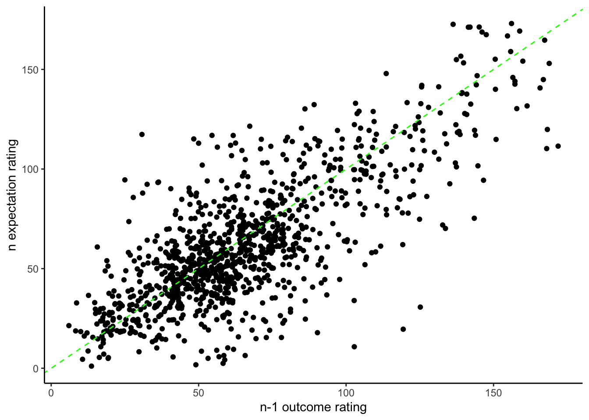
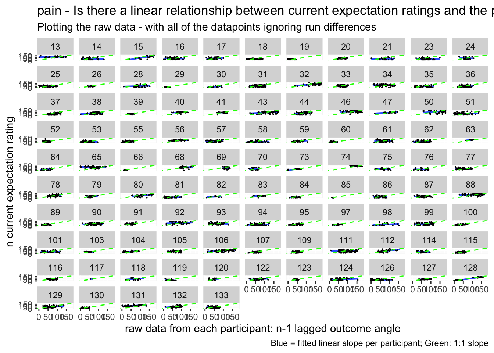
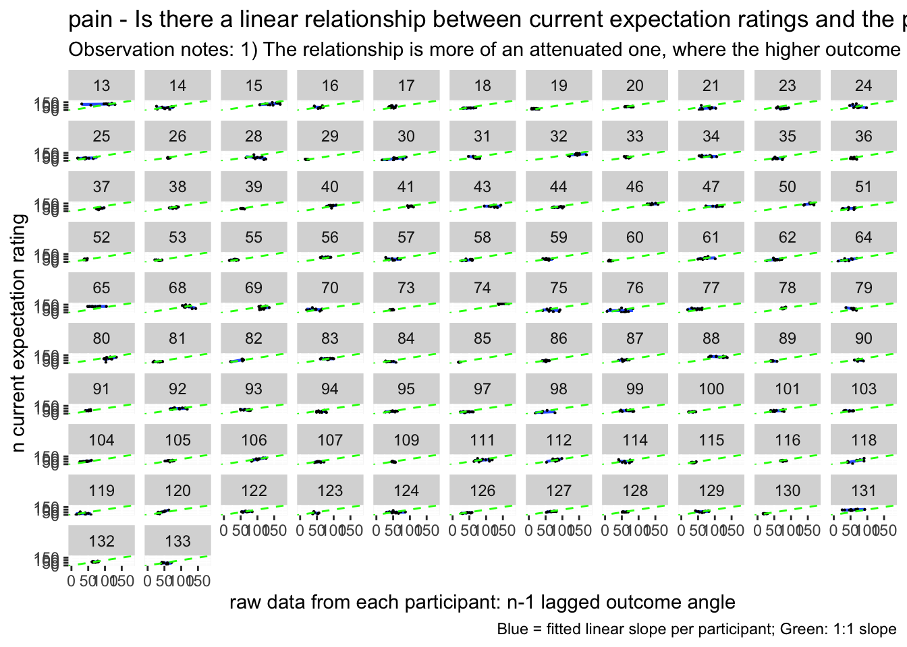
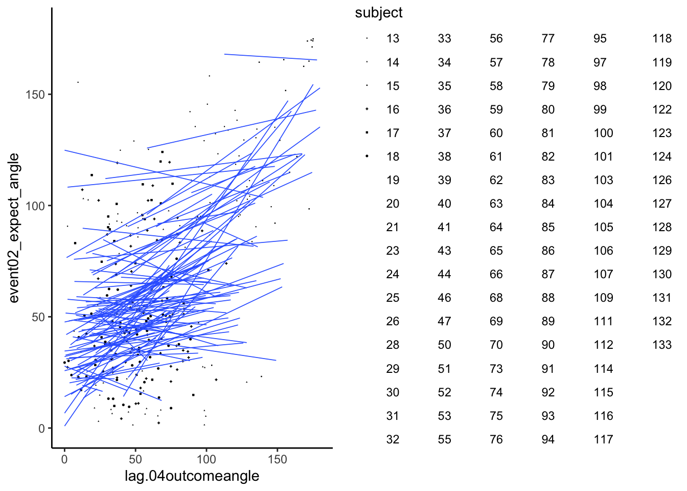
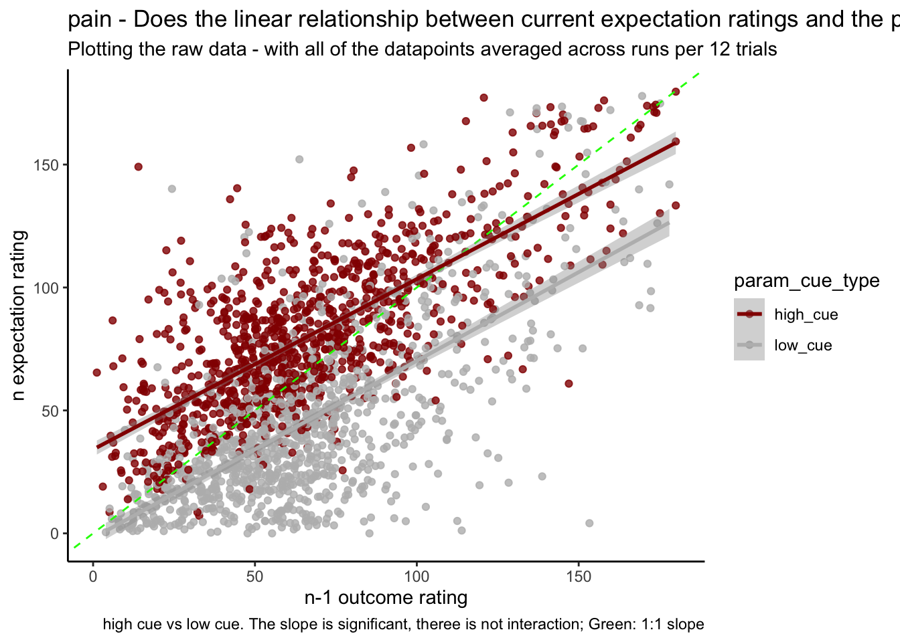
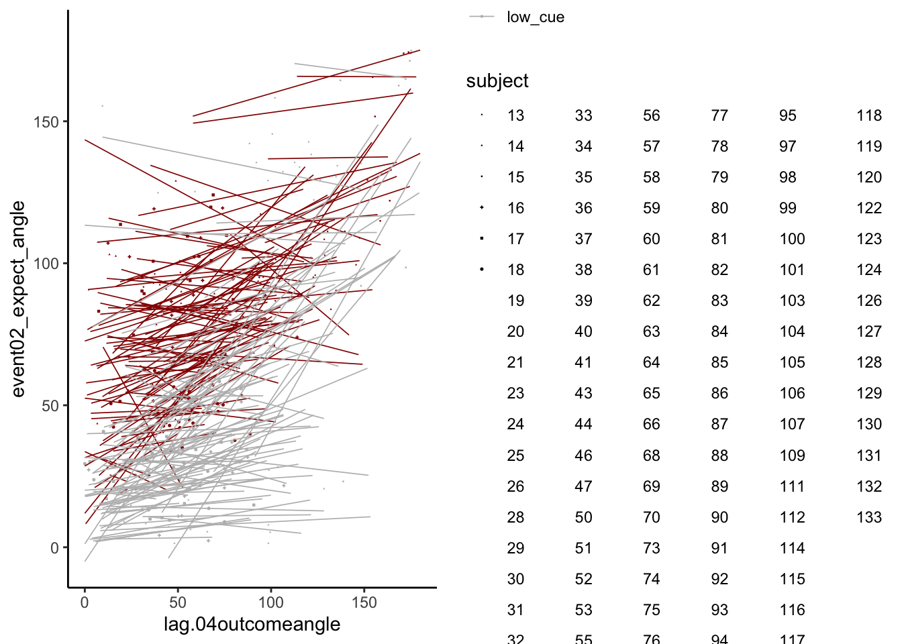
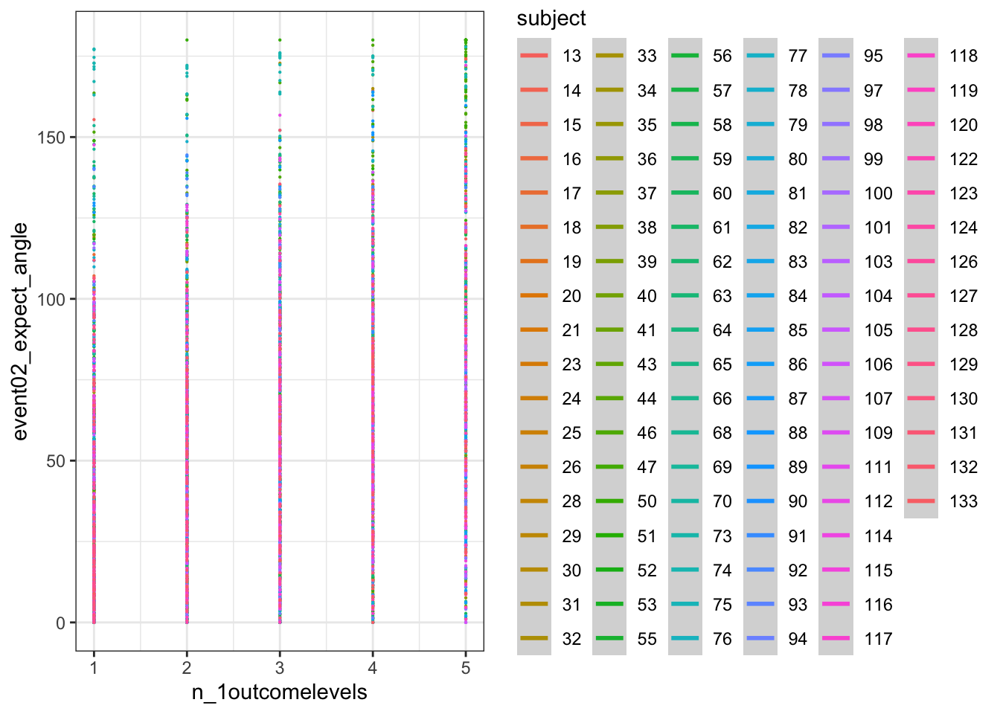
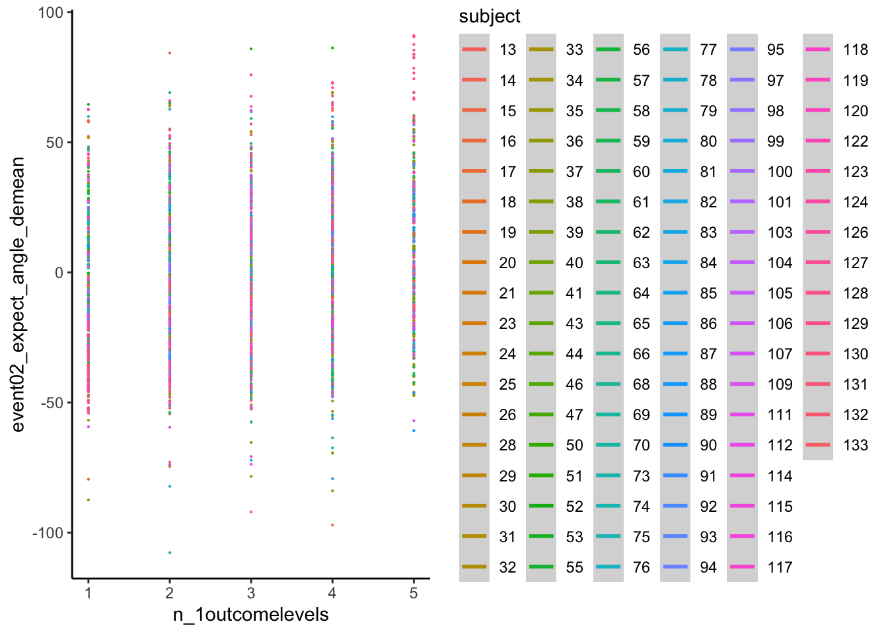

Chapter 11 [beh] N-1 outcome rating ~ N expectation rating
date: '2022-09-13'
updated: '2023-01-18'Overview
- My hypothesis is that the cue-expectancy follows a Bayesian mechanism, akin to what’s listed in Jayazeri (2019)
- Here, I plot the expectation ratings (N) and outcome ratings (N-1) and see if the pattern is akin to a sigmoidal curve.
- If so, I plan to dive deeper and potentially take a Bayesian approach. Jayazeri (2018)
11.1 expectation_rating ~ N-1_outcome_rating
Additional analyse 01/18/2023: Q. Do previous outcome ratings predict current expectation ratings?
- see if current expectation ratings predict outcome ratings
- see if prior stimulus experience (N-1) predicts current expectation ratings
- see if current expectation ratings are explained as a function of prior outcome rating and current expectation rating
when loading the dataset, I need to add in trial index per dataframe. Then, for the shift the rating?
model.lagoutcome = lmer(event02_expect_angle ~ lag.04outcomeangle + (1 | src_subject_id) + (1|session_id) , data = data_a3lag_omit,REML = FALSE)
# summary(model.lagoutcome)
sjPlot::tab_model(model.lagoutcome)| event02_expect_angle | |||
|---|---|---|---|
| Predictors | Estimates | CI | p |
| (Intercept) | 43.60 | 38.85 – 48.34 | <0.001 |
| lag 04outcomeangle | 0.28 | 0.25 – 0.31 | <0.001 |
| Random Effects | |||
| σ2 | 773.59 | ||
| τ00 src_subject_id | 472.65 | ||
| τ00 session_id | 0.02 | ||
| ICC | 0.38 | ||
| N src_subject_id | 104 | ||
| N session_id | 3 | ||
| Observations | 4807 | ||
| Marginal R2 / Conditional R2 | 0.080 / 0.429 | ||
Not sure whether this is accurate
startvec <- c(Asym =10, xmid = 0, scal = 350)
nm1 <- nlmer(event02_expect_angle ~ SSlogis(lag.04outcomeangle,Asym, xmid, scal) ~ Asym|src_subject_id,
data_a3lag_omit, start = startvec)nform <- ~Asym/(1+exp((xmid-input)/scal))
## b. Use deriv() to construct function:
nfun <- deriv(nform,namevec=c("Asym","xmid","scal"),
function.arg=c("input","Asym","xmid","scal"))
nm1b <- update(nm1,event02_expect_angle ~ nfun(lag.04outcomeangle, Asym, xmid, scal) ~ Asym | src_subject_id)
sjPlot::tab_model(nm1b)|
event02_expect_angle ~ nfun(lag.04outcomeangle, Asym, xmid, scal) |
|||
|---|---|---|---|
| Predictors | Estimates | CI | p |
| Asym | 10173.50 | 10031.00 – 10316.00 | <0.001 |
| xmid | 1437.76 | 1326.22 – 1549.30 | <0.001 |
| scal | 267.15 | 244.84 – 289.47 | <0.001 |
| Random Effects | |||
| σ2 | 776.12 | ||
| τ00 | |||
| τ00 | |||
| τ11 src_subject_id.Asym | 12680931.61 | ||
| ρ01 | |||
| ρ01 | |||
| ICC | 1.00 | ||
| N src_subject_id | 104 | ||
| Observations | 4807 | ||
| Marginal R2 / Conditional R2 | 0.606 / 1.000 | ||
bbmle::AICtab(model.lagoutcome, nm1b)## dAIC df
## model.lagoutcome 0.0 5
## nm1b 8.3 5
## Warning: Using `size` aesthetic for lines was deprecated in ggplot2 3.4.0.
## ℹ Please use `linewidth` instead.## `geom_smooth()` using formula = 'y ~ x'## Warning: Removed 222 rows containing non-finite values (`stat_smooth()`).## Warning: Removed 222 rows containing missing values (`geom_point()`).

# https://gist.github.com/even4void/5074855## Warning: Removed 222 rows containing non-finite values (`stat_smooth()`).## Warning: The shape palette can deal with a maximum of 6 discrete values because
## more than 6 becomes difficult to discriminate; you have 104. Consider
## specifying shapes manually if you must have them.## Warning: Removed 4763 rows containing missing values (`geom_point()`).
11.2 Current expectation_rating ~ N-1_outcomerating * cue
Additional analysis 01/23/2023 Q. Do these models differ as a function of cue?
model.lag_cue = lmer(event02_expect_angle ~ lag.04outcomeangle*param_cue_type + (1 | src_subject_id) + (1|session_id) , data = data_a3lag_omit)## boundary (singular) fit: see help('isSingular')sjPlot::tab_model(model.lag_cue)| event02_expect_angle | |||
|---|---|---|---|
| Predictors | Estimates | CI | p |
| (Intercept) | 62.40 | 57.60 – 67.21 | <0.001 |
| lag 04outcomeangle | 0.26 | 0.23 – 0.29 | <0.001 |
| param cue type [low_cue] | -34.76 | -37.24 – -32.27 | <0.001 |
|
lag 04outcomeangle * param cue type [low_cue] |
0.01 | -0.03 – 0.04 | 0.745 |
| Random Effects | |||
| σ2 | 472.37 | ||
| τ00 src_subject_id | 496.11 | ||
| τ00 session_id | 0.00 | ||
| N src_subject_id | 104 | ||
| N session_id | 3 | ||
| Observations | 4807 | ||
| Marginal R2 / Conditional R2 | 0.456 / NA | ||


11.3 Let’s demean the ratings.
- Bin ratings
- Check if the bins do their jobs? by plotting one run
- then check the min, max and see if the quantization is done properly.
YES, it is
confirm that df discrete has 5 levels per participant the number of counts per frequency can differ
## # A tibble: 516 × 3
## src_subject_id n_1outcomelevels n
## <fct> <dbl> <int>
## 1 13 1 2
## 2 13 2 7
## 3 13 3 4
## 4 13 4 12
## 5 13 5 19
## 6 14 1 11
## 7 14 2 17
## 8 14 3 7
## 9 14 4 8
## 10 14 5 1
## # … with 506 more rows## `geom_smooth()` using formula = 'y ~ s(x, bs = "cs")'## Warning: Removed 222 rows containing non-finite values (`stat_smooth()`).## Warning: Computation failed in `stat_smooth()`
## Caused by error in `smooth.construct.cr.smooth.spec()`:
## ! x has insufficient unique values to support 10 knots: reduce k.## Warning: Removed 222 rows containing missing values (`geom_point()`).
11.4 DEMEAN AND THEN DISCRETIZE
res <- df_discrete %>%
group_by(src_subject_id,n_1outcomelevels) %>%
tally()
res## # A tibble: 516 × 3
## # Groups: src_subject_id [104]
## src_subject_id n_1outcomelevels n
## <fct> <dbl> <int>
## 1 13 1 2
## 2 13 2 7
## 3 13 3 4
## 4 13 4 12
## 5 13 5 19
## 6 14 1 11
## 7 14 2 17
## 8 14 3 7
## 9 14 4 8
## 10 14 5 1
## # … with 506 more rows## `geom_smooth()` using formula = 'y ~ s(x, bs = "cs")'## Warning: Removed 2917 rows containing non-finite values (`stat_smooth()`).## Warning: Computation failed in `stat_smooth()`
## Caused by error in `smooth.construct.cr.smooth.spec()`:
## ! x has insufficient unique values to support 10 knots: reduce k.## Warning: Removed 2917 rows containing missing values (`geom_point()`).